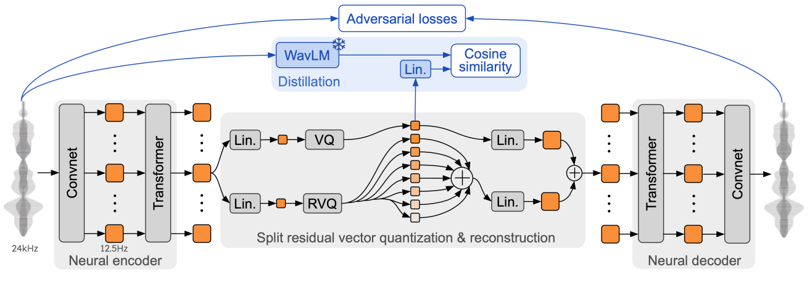
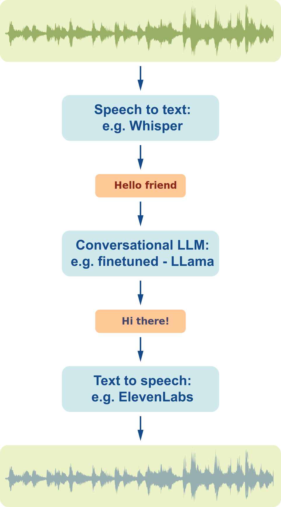

🎙️ Speech AI models: an introduction
Speech interfaces are a strange beast. On the one hand, they are such a natural fit for human communication, and on the other hand, they have so little adoption in the real world. My belief is that a reason for this discrepancy is that the quality threshold of interaction required for widespread adoption is significantly higher than many people realize.
Last month, a demo from the out-of-stealth startup Sesame made waves in the AI community, quickly securing two top spots in Hugging Face's top-5 trending repositories—an impressive achievement in the highly competitive open-source model space.
Despite Sesame's remarkable “wow-effect" demo and the enthusiastic reception of its open-source code and model, the model's sophistication and specific expertise required for speech AI created a knowledge barrier for newcomers.
Also, the model that the Sesame team released was a base model and not than a fine-tuned version, so getting started with it required training the model, a technical step that’s not always easy when you’re new to the field.
So I decided to write an introduction blog post and a small repository with examples to get you started with speech AI models. The goal is to bridge the gap between recent audio models like Sesame's and the wider community of AI developers and researchers.
Let's start with a quick intro to audio tokenization, one of the key concept to understand modern speech AI.
Crash course on audio tokenization
Tokenizing audio has been a revolution in recent audio AI generation (and compression). The general idea of audio tokenization is to convert an audio signal into a list of integers, each integer being the ID of a vector (you can think of it as a small audio waveform) in an audio vocabulary using an audio tokenizer.
In today’s approach, the audio tokenizer and vocabulary are themselves an ML model and vector embeddings trained on a wide range of audio signals for quantization and reconstructionSesame used a general-purpose audio tokenizer model called "Mimi" which was released last year by the open-source Parisian research lab Kyutai..
How does audio tokenization work? Let’s say you recorded the word “hello”. In the audio vocabulary of our audio tokenizer, we'll find a list of sound waves, for instance, audio vectors for the sound “hel” and the sound “lo”You can understand them in a very first approximation as syllabus, but in general this processus will work for any type of sound, not only spoken sounds, obviously. Just to put some arbitrary numbers on them, we can say for instance that the sound “hel” is at location 42 in our audio vocabulary (it's the 42nd sound wave) and the sound “lo” is at location 512.
Instead of working with the full complex wave signal for “hello”, we can then just work, process and store the list [42, 512]. This reduces the length of our input, from the 44100 samples per second in a typical wave down to just two numbers. Much easier and compact to process for LLM and AI models!
But this is clearly not enough! People pronounce words in countless unique ways, even common words like "Hello". Using only generic sound tokens (often called "semantic tokens") captures the basic content of the audio but discards rich acoustic information like accent, tonality, emotion, and personal speaking style. A naive extension would be to create tokens for every possible pronunciation variation, but in this approach the vocabulary will quickly grow to an unmanageable size.
Can we retain the benefits of quantization (small size, easy processing by LLMs) while preserving sound quality? Yes, through a technique called Residual Vector Quantization (RVQ), pioneered and adapted in speech by researchers formerly at Meta and now primarily at Kyutai.
Here's how RVQ works: First, we quantize our audio by finding the closest matching sound wave in our database like we did before (we call it a “quantized” vector). Then we subtract this quantized approximation from the original audio to calculate how much they differ—this difference is called the "residual" vector. Next, we quantize again the residual vector itself, i.e. we find the closest vector to the residual vector, in a second vocabulary.
We’re essentially identifying common patterns in the difference between our original sound and the closest vector in our vocabulary. You can think of it like this: after finding a basic pronunciation of "hello" in our database, we might discover that the remaining difference encodes a distinctive accent of the speaker (let’s say London accent). Rather than storing every possible accented version of "hello," we store the standard pronunciation plus a separate "accent modifier."Here again, this is just a metaphorical way to explain the concept, these vectors are learned automatically from the data and don't especially correspond to any real "accent". For instance this method works as well for non-vocal sounds.
In practice, we will then represent the sound wave for "hello" with tokens [42, 512] (our basic sounds) plus residual tokens to each of the sound waves 42 and 512, correcting the missing pecularities of our original sound. Let's say we our quantized residual wave are at respective locations 21 and 52 in the second vocabulary. By combining (in practice just summing) the audio from the first level (the basic sounds waves at indices [42, 512]) with the audio from the second level (the accent characteristics sounds waves at indices [21, 52]), we achieve a much closer approximation of the original sound.
You can explore this in the demo below that we will explain in greater details in the following paragraphs. This demo showcase a general-purpose audio tokenizer model called "Mimi" which was released last year by the open-source Parisian research lab Kyutai as part of their speech LLM release called "Moshi".
In practice, before the quantization process, the original sound wave is preprocessed by an encoder (a series of convolution and transformers layers) to project it in a larger dimensional spaces (the original sound is just a 1D float list)You can imagine this as moving the signal in part from the time space to the frequency (Fourier) space to better model its nature as a wave, similarly to how convolutions help model images signal better. . The Mimi encoder used in Sesame uses 4 convolutional blocks and a final 1D convolution projecting to perform this pre-processing, going from an original a 24kHz waveform to a latent representation of 12.5 frames per second, each frame being of dimension D = 512. It is these vector frames which are then quantized as we explained.

As you see in the above demo, the quantization process doesn't have to stop at two levels by the way. We can continue computing the remaining difference between our last approximation ([42, 512] + [21, 52]) and the original frame, then find the closest vector to this new residual in a third vocabulary and so on. Each iteration should bring us closer to the original sound.
The Mimi encoder allows to repeat this process up to 32 times as it was trained with 32 levels each containing a vocabulary of 2051 vectors. We can then achieve a remarkably high audio quality while representing each frame of our audio input just by 32 integers. This efficient encoding creates a compact representation that preserves both content and speaker characteristics.
You’ve likely noticed our audio vocabulary is still growing with the quality of repoduction as we need a separate vocabulary for each level. However this growth is linear with the number of levels versus the exponential growth we had earlier with a single vocabulary. In practice the total number of vectors needed for a good quality signal reproduction is much lower than in the former naive single vocabulary approach, and the quality much higher as well.
You can play with using various levels in Mimi in the demo above to experience how sound quality changes with more or less levels of residual vectors.One specificity of Mimi is that the first level is treated a bit differently to discouple the semantic content from the audio content. This semantic content level has an additional loss function to distill a content model called WaveLM but for the content of this short introduction this won’t change much..
Let’s finish this section by being a bit more precise in our vocabulary as illustrated on the previous graph. We will call "codebooks" the vocabularies at each level of quantization and “codes” the indices of our quantized vectors in our audio vocabularies Note that "code" and "codebooks" are sometime used interchangeabily for each other (our previous [42, 512] + [21, 52]). We have one codebook for each layer in our RVQ setup. Also, instead of syllables which are really only for speech we will talk about “frames” which are generally fixed length small slices of audio. Our “frame rate” (i.e. the number of frames per seconds) will also define the shortest amount of audio our model is able to process which in turn constrain the lowest latency of the whole system.
Latency is critical for conversational speech. Many conversational AI products died because of too long latency to interact with. In general an AI conversational speech model will have to reply in much less than a second for a confortable interaction, actually closer to 200ms and even being able to be smoothly interrupted or interrupt the user (you should use the later with good moderation though :).
Now that we’ve seen the basics of audio tokenization, it’s time to see how we can design a speech-to-speech system like the "Contextual Speech Model" (CSM) of Sesame.
Diving in the architecture of a contextural speech model
Let’s start with the simplest way you can implement a Speech to speech chatbot nowadayNote that this is still an introduction to speech systems, we won’t cover many optimizations you can do to these systems (just generally point toward them). : chaining a speech-to-text (also called ASR “automatic speech recognition”) system with a text-to-text (an LLM) and a text to speech system (TTS). This can be done in three lines of Gradio on a Hugging Face Space, e.g. as explained in Gradio doc.

implemented in a few lines of python: simple demo spaces.
This pipeline is quite slow though as every step of the processing is happening sequentially so we will need to wait that we've received the full input to process it, etc. To make it more efficient we can parallelize the first step (speech recognition) with the beginning of the second step (text processing) in a form of "pipelining".
But beyond latency, a crucial element is missing here. We’re going from speech as input to speech as output through the medium of text only. This loses a lot of critical information around the non-written communication elements, for instance which tone we should use, how fast we should reply or which emotion should the answer convey (does the user sound hesitant, happy, sad etc).
These prosodic aspects could be discretized by using some specific control tokens for the speech generation system, e.g. by using trained tokens like [happy], [laugh] as explicit arguments. This is done in frameworks like OpenVoice or the recent Dia model. However, there will be an exponentially large number of ways the prosody of the output audio could be tuned for better relevancy and a deeper connection with the human interlocutor.
While the jury is still out on how important these aspect will be, the Sesame team is ossibly one of the first team which clearly illustrated in their demo how and why taking the input audio signal into account could be essential to reach a “wow” connection effect with the interlocutor (in comparison to flat tone real-time APIs like the ones of currently available OpenAI or ElevenLabs voices). Here is an example discussion with the Verge journalist Sean Hollister:
The core point here is that, beyond the literal words someone is saying, the tone, inflection, and cadence of the speech convey a lot of information and are essential to the comfort and pleasure (or awkwardness) one will experience in a discussion.
So how can we approach this? Well as often explored in deep-learning the idea of Sesame is that conversational prosody (tone, inflection, cadence) can be learned from data given the right model and formatting of the input and training data.
Let’s take a look at how their model approach this question. The Contextual Speech Model takes as input an alternating sequence of text and corresponding audio (each consecutive pair of {text, audio} corresponds to an utterance –a line– in the dialogue). The sequence ends with the final text to be translated into audio and a speaker index is added at the beginning of each text part to help the model associate each voice with the speaker audio. From this input sequence the model will generate the frames of the audio one by one.
Other dimensions (higher rows) contains pre-tokenized audio codes of the audio coresponding to the previous text.
Colors denotes speakers.
Using these types of inputs, the speech generation model will be able to consider as inputs both the text and the associated audio. The hope is that given enough training data of this kind, it would be able to, on its own, adjust the tone, cadence, and prosody of the generated speech to the context of the conversation. As you can see we’re also using tokenized speech here to make the modeling of audio more compressed and adapted for processing by a typical transformer model.
Using an alternating sequence of text and audio will make us able to generate audio from text by cuttting the input at the right location: just after a text input.
There is one important issue with using a transformer model to generate our audio codes though. As you remember, we’ll need to generate multiple codebooks for each frame for a decent audio quality (see the demo above) and we saw how they were sequentially dependent on each other in the RVQ framework, each of the 32 codes in a frame being generally a prediction of the residual from lower levels of quantization.
This sequential steps will have to be generated for each frame, ie. multiple times and even tens of times per second. This will quickly become a huge bottleneck if we use a large transformers to compute all residuals.
To achieve a fast generation, Sesame actually uses two models under the hood. Given the audio+text input which ends with a text response from the chat LLM, a first model –called a backbone– generates the first hidden state and the first codebook (which is also called the “semantic code” as we saw). This first model is pretty large: 1 billion parameters in the open-sourced version of CSM and up to 8 billion in the published tech report. After this first code has been generated, a much smaller model –called a decoder– can be used to successively generate the full sequence of 32 code from the hidden-state and first code output by the larger model. This smaller model is for instance 10 times smaller than the backbone: 100M parameters in the model open-sourced by Sesame. We'll call this smaller model +30 times so this is a great way limits the latency added by these sequential steps.
Once a full audio frames has been generated it can be converted back in audio using the Mimi decoder and sent back to the user.
A lot of the magic of course lies in all the optimization to streamline this process down to the lowest possible latency, handle interruptions and get great data to train/finetune at least both the conversational LLM and the CSM model.
Gathering all the knowledge we’ve covered up to now we can take a look at a possible and simple full pipeline system like the one of Sesame:
As you can understand from this diagram, beside training the model, a lot of the magic here is to dynamically manage this pipeline to squeeze the latency as much as possible in order to reach a 200-300 ms reactivity. We’ll let all this optimization as future work for the reader (:-) and will now play a bit with the model, trying to make a simple code base gathering all our learnings.
Show me the code!
One of the first point to explore with the released Contextural Speech Model of Sesame is to finetune it on a couple of voices so that the quality improve from the generic released base model. Because I’m a big NotebookLM fan, I've started to work on a small code base for finetuning here: Github Sesame Explorations and a small dataset of NotebookLM conversations here NotebookLM conversations dataset.
This codebase is still work in progress. Feel free to participate in its development. I'll push some results soon.Future research direction
To close our introduction, I would like to highlight three interesting directions for community research projects around the open-sourced Contextural Speech Model:
- A single, unified, speech-to-speech model.
- A new evaluation for contextual speech-to-speech models.
- A new conversation labelled dataset.
Unified speech-to-speech model. A promising future direction that builds on the previous system architecture is to develop a single model capable of handling the entire conversation flow, from speech input directly to speech output without handeling separately the text modality. This approach has already been explored by the Kyutai research lab in their Moshi release. However, implementing this technique effectively remains challenging, as evident when comparing the Sesame and Moshi demos. The difference in user experience likely stems in part from variations in training data, with Moshi primarily using synthetic data, but there may be other factors as well, including some heuristics.
More evaluations: "HellaSpeech". Another interesting direction worth exploring involves evaluation methods. A valuable insight in Sesame's technical report is their explanation that conventional, non-contextual, benchmarks like word error rate or speaker similarity have reached saturation points in speech technology (with all recent models performing at high level and differences often falling within statistical noise). They propose a few alternative benchmarks to address this gap:
- disambiguate homographs (word which are written the same but pronounced differently depending on the context), e.g., “lead” /lɛd/ as a metal vs. “lead” /liːd/ as in “to guide”,
- evaluate the consistency of pronunciation, if a name is pronounced one way it should be further pronounced the same way in the conversation.
I'm tempted to propose another benchmark based on a famous NLP benchmark called HellaSwag. HellaSwag is a multiple choice benchmark where each test sample is composed of the beginning of a sentence together with four possible continuations of it, three of these being machine generated and one being the real continuation. Models have to assign the highest probably to the real continuation.
HellaSwag has several interesting features which made it a lasting standard in LLM training: it’s one of the benchmark which both give the earliest signal of quality during the training of a model (models can make early progress) but also one that keep giving signal throughout the whole training (getting the full 100 score is really difficult because the benchmark is in part adversarially generated). It’s a deeply contextual benchmark which could make it potentially interesting to translate from the NLP world to the audio world.
More dialog-labelled conversational datasets. A further important direction for the community is to release more dialog-labelled conversation dataset. Either for finetuning with limited size dataset or even during pretraining for larger dataset. Datasets are often the bottleneck in speech model training as well as the most essential element. Kyutai's Moshi and Sesame's CSM parallel stories seem to highlight that synthetic data is not yet able to fully replace all the need for good quality real world data.
Releasing a permissively licenced, open-source friendly, medium size dialog dataset could go a long way in unlocking further progress in the domain.
I hope you enjoyed this introduction to the world of speech AI models and the recent work of the Sesame team. I’m looking forward to seeing what the community will do with these new tools and ideas!